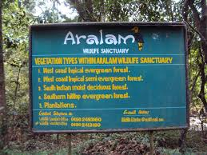

Aralam Wildlife Sanctuary
The various types of forests found in the Aralam wildlife sanctuary include
the tropical evergreen, tropical semi-evergreen, south Indian moist deciduous
and hilltop evergreen forests and plantations. Animals generally found in
the Western Ghats such as Sambar deer, Elephants, Peacocks, Lion-tailed
Macaques, Boars, the Common Langur, wild dogs, the Common Otter and the
Malabar Giant Squirrel and so on can be found here. Tigers and Bison
are spotted occasionally.

Parassinikadavu Snake Park
Regarded as one of the finest snake sanctuaries of Asia,
the Parassinikadavu Snake Park is the pride of the south.
It is one of the most prominent reptile preservation centres
in the country and is the only one in Kerala. The Parassinikadavu
Snake Park is home to over 150 different species of reptiles like
crocodiles, monitor lizards and snakes- both venomous and non-venomous.
Not only reptiles and amphibians, but this snake park also goes a long
way to preserve and protect many wild mammals, marine creatures
as well as rare avifauna- both endemic and migratory.